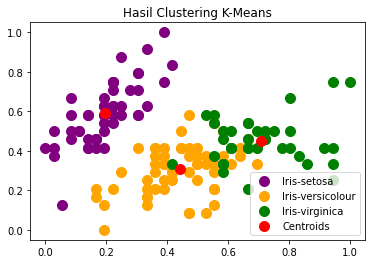
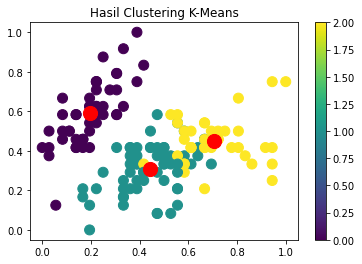

.png)
K-Means Clustering on Iris Datasets
K-Means Clustering on Iris Datasets#
Metode Clustering Algoritma adalah mengelompokkan beberapa data ke dalam kelompok yang menjelaskan data dalam satu kelompok memiliki karakteristik yang sama dan memiliki karakteristik yang berbeda dengan data yang ada di kelompok lain.
# Import Modul
import pandas as pd
import numpy as np
import matplotlib.pyplot as plt
from sklearn.cluster import KMeans
from sklearn.preprocessing import MinMaxScaler
# Menampilkan Dataset
url = "https://archive.ics.uci.edu/ml/machine-learning-databases/iris/iris.data"
colnames = ['sepal-length', 'sepal-width', 'petal-length', 'petal-width', 'Class']
irisdata = pd.read_csv(url, names=colnames)
irisdata.head()
| sepal-length | sepal-width | petal-length | petal-width | Class | |
|---|---|---|---|---|---|
| 0 | 5.1 | 3.5 | 1.4 | 0.2 | Iris-setosa |
| 1 | 4.9 | 3.0 | 1.4 | 0.2 | Iris-setosa |
| 2 | 4.7 | 3.2 | 1.3 | 0.2 | Iris-setosa |
| 3 | 4.6 | 3.1 | 1.5 | 0.2 | Iris-setosa |
| 4 | 5.0 | 3.6 | 1.4 | 0.2 | Iris-setosa |
Menentukan fitur yang akan dikelompokkan.
Disini fitur yang akan digunakan adalah Sepal-Length, Sepal-Width, Petal-Length, Petal-Width
irisdata_x = irisdata.iloc[:, 0:4]
irisdata_x.head()
| sepal-length | sepal-width | petal-length | petal-width | |
|---|---|---|---|---|
| 0 | 5.1 | 3.5 | 1.4 | 0.2 |
| 1 | 4.9 | 3.0 | 1.4 | 0.2 |
| 2 | 4.7 | 3.2 | 1.3 | 0.2 |
| 3 | 4.6 | 3.1 | 1.5 | 0.2 |
| 4 | 5.0 | 3.6 | 1.4 | 0.2 |
# Mengubah dataframe ke dalam bentuk array
x_array = np.array(irisdata_x)
print(x_array)
[[5.1 3.5 1.4 0.2]
[4.9 3. 1.4 0.2]
[4.7 3.2 1.3 0.2]
[4.6 3.1 1.5 0.2]
[5. 3.6 1.4 0.2]
[5.4 3.9 1.7 0.4]
[4.6 3.4 1.4 0.3]
[5. 3.4 1.5 0.2]
[4.4 2.9 1.4 0.2]
[4.9 3.1 1.5 0.1]
[5.4 3.7 1.5 0.2]
[4.8 3.4 1.6 0.2]
[4.8 3. 1.4 0.1]
[4.3 3. 1.1 0.1]
[5.8 4. 1.2 0.2]
[5.7 4.4 1.5 0.4]
[5.4 3.9 1.3 0.4]
[5.1 3.5 1.4 0.3]
[5.7 3.8 1.7 0.3]
[5.1 3.8 1.5 0.3]
[5.4 3.4 1.7 0.2]
[5.1 3.7 1.5 0.4]
[4.6 3.6 1. 0.2]
[5.1 3.3 1.7 0.5]
[4.8 3.4 1.9 0.2]
[5. 3. 1.6 0.2]
[5. 3.4 1.6 0.4]
[5.2 3.5 1.5 0.2]
[5.2 3.4 1.4 0.2]
[4.7 3.2 1.6 0.2]
[4.8 3.1 1.6 0.2]
[5.4 3.4 1.5 0.4]
[5.2 4.1 1.5 0.1]
[5.5 4.2 1.4 0.2]
[4.9 3.1 1.5 0.1]
[5. 3.2 1.2 0.2]
[5.5 3.5 1.3 0.2]
[4.9 3.1 1.5 0.1]
[4.4 3. 1.3 0.2]
[5.1 3.4 1.5 0.2]
[5. 3.5 1.3 0.3]
[4.5 2.3 1.3 0.3]
[4.4 3.2 1.3 0.2]
[5. 3.5 1.6 0.6]
[5.1 3.8 1.9 0.4]
[4.8 3. 1.4 0.3]
[5.1 3.8 1.6 0.2]
[4.6 3.2 1.4 0.2]
[5.3 3.7 1.5 0.2]
[5. 3.3 1.4 0.2]
[7. 3.2 4.7 1.4]
[6.4 3.2 4.5 1.5]
[6.9 3.1 4.9 1.5]
[5.5 2.3 4. 1.3]
[6.5 2.8 4.6 1.5]
[5.7 2.8 4.5 1.3]
[6.3 3.3 4.7 1.6]
[4.9 2.4 3.3 1. ]
[6.6 2.9 4.6 1.3]
[5.2 2.7 3.9 1.4]
[5. 2. 3.5 1. ]
[5.9 3. 4.2 1.5]
[6. 2.2 4. 1. ]
[6.1 2.9 4.7 1.4]
[5.6 2.9 3.6 1.3]
[6.7 3.1 4.4 1.4]
[5.6 3. 4.5 1.5]
[5.8 2.7 4.1 1. ]
[6.2 2.2 4.5 1.5]
[5.6 2.5 3.9 1.1]
[5.9 3.2 4.8 1.8]
[6.1 2.8 4. 1.3]
[6.3 2.5 4.9 1.5]
[6.1 2.8 4.7 1.2]
[6.4 2.9 4.3 1.3]
[6.6 3. 4.4 1.4]
[6.8 2.8 4.8 1.4]
[6.7 3. 5. 1.7]
[6. 2.9 4.5 1.5]
[5.7 2.6 3.5 1. ]
[5.5 2.4 3.8 1.1]
[5.5 2.4 3.7 1. ]
[5.8 2.7 3.9 1.2]
[6. 2.7 5.1 1.6]
[5.4 3. 4.5 1.5]
[6. 3.4 4.5 1.6]
[6.7 3.1 4.7 1.5]
[6.3 2.3 4.4 1.3]
[5.6 3. 4.1 1.3]
[5.5 2.5 4. 1.3]
[5.5 2.6 4.4 1.2]
[6.1 3. 4.6 1.4]
[5.8 2.6 4. 1.2]
[5. 2.3 3.3 1. ]
[5.6 2.7 4.2 1.3]
[5.7 3. 4.2 1.2]
[5.7 2.9 4.2 1.3]
[6.2 2.9 4.3 1.3]
[5.1 2.5 3. 1.1]
[5.7 2.8 4.1 1.3]
[6.3 3.3 6. 2.5]
[5.8 2.7 5.1 1.9]
[7.1 3. 5.9 2.1]
[6.3 2.9 5.6 1.8]
[6.5 3. 5.8 2.2]
[7.6 3. 6.6 2.1]
[4.9 2.5 4.5 1.7]
[7.3 2.9 6.3 1.8]
[6.7 2.5 5.8 1.8]
[7.2 3.6 6.1 2.5]
[6.5 3.2 5.1 2. ]
[6.4 2.7 5.3 1.9]
[6.8 3. 5.5 2.1]
[5.7 2.5 5. 2. ]
[5.8 2.8 5.1 2.4]
[6.4 3.2 5.3 2.3]
[6.5 3. 5.5 1.8]
[7.7 3.8 6.7 2.2]
[7.7 2.6 6.9 2.3]
[6. 2.2 5. 1.5]
[6.9 3.2 5.7 2.3]
[5.6 2.8 4.9 2. ]
[7.7 2.8 6.7 2. ]
[6.3 2.7 4.9 1.8]
[6.7 3.3 5.7 2.1]
[7.2 3.2 6. 1.8]
[6.2 2.8 4.8 1.8]
[6.1 3. 4.9 1.8]
[6.4 2.8 5.6 2.1]
[7.2 3. 5.8 1.6]
[7.4 2.8 6.1 1.9]
[7.9 3.8 6.4 2. ]
[6.4 2.8 5.6 2.2]
[6.3 2.8 5.1 1.5]
[6.1 2.6 5.6 1.4]
[7.7 3. 6.1 2.3]
[6.3 3.4 5.6 2.4]
[6.4 3.1 5.5 1.8]
[6. 3. 4.8 1.8]
[6.9 3.1 5.4 2.1]
[6.7 3.1 5.6 2.4]
[6.9 3.1 5.1 2.3]
[5.8 2.7 5.1 1.9]
[6.8 3.2 5.9 2.3]
[6.7 3.3 5.7 2.5]
[6.7 3. 5.2 2.3]
[6.3 2.5 5. 1.9]
[6.5 3. 5.2 2. ]
[6.2 3.4 5.4 2.3]
[5.9 3. 5.1 1.8]]
Melakukan normalisasi data dengan menggunakan metode Min Max Scaler.
Normalisasi data digunakan untuk memperkecil jarak antar sehingga memudahkan dalam proses perhitungan.
scaler = MinMaxScaler()
x_scaled = scaler.fit_transform(x_array)
x_scaled
dataframe= pd.DataFrame(x_scaled, columns=['Sepal-Length','Sepal-Width','Petal-Length','Petal-Width'])
print (dataframe)
Sepal-Length Sepal-Width Petal-Length Petal-Width
0 0.222222 0.625000 0.067797 0.041667
1 0.166667 0.416667 0.067797 0.041667
2 0.111111 0.500000 0.050847 0.041667
3 0.083333 0.458333 0.084746 0.041667
4 0.194444 0.666667 0.067797 0.041667
.. ... ... ... ...
145 0.666667 0.416667 0.711864 0.916667
146 0.555556 0.208333 0.677966 0.750000
147 0.611111 0.416667 0.711864 0.791667
148 0.527778 0.583333 0.745763 0.916667
149 0.444444 0.416667 0.694915 0.708333
[150 rows x 4 columns]
Menentukan dan mengonfigurasi fungsi k-means dengan mengelompokkan data menjadi 3 cluster
kmeans = KMeans(n_clusters = 3, init = 'k-means++', max_iter = 300, n_init = 10, random_state = 0)
y_kmeans = kmeans.fit_predict(x_scaled)
kmeans.fit(x_scaled)
KMeans(n_clusters=3, random_state=0)
# Menentukan Nilai Centroid
print(kmeans.cluster_centers_)
[[0.19611111 0.59083333 0.07864407 0.06 ]
[0.44125683 0.30737705 0.57571548 0.54918033]
[0.70726496 0.4508547 0.79704476 0.82478632]]
# Menambahkan kolom cluster pada dataframe
irisdata["kluster"] = kmeans.labels_
Visualisasi hasil clustering
#Cara 1
#Visualising the clusters
plt.title("Hasil Clustering K-Means")
plt.scatter(x_scaled[y_kmeans == 0, 0], x_scaled[y_kmeans == 0, 1], s = 100, c = 'purple', label = 'Iris-setosa')
plt.scatter(x_scaled[y_kmeans == 1, 0], x_scaled[y_kmeans == 1, 1], s = 100, c = 'orange', label = 'Iris-versicolour')
plt.scatter(x_scaled[y_kmeans == 2, 0], x_scaled[y_kmeans == 2, 1], s = 100, c = 'green', label = 'Iris-virginica')
#Plotting the centroids of the clusters
plt.scatter(kmeans.cluster_centers_[:, 0], kmeans.cluster_centers_[:,1], s = 100, c = 'red', label = 'Centroids')
plt.legend()
<matplotlib.legend.Legend at 0x7f36772d65d0>

# Cara 2
output = plt.scatter(x_scaled[:,0], x_scaled[:,1], s = 100, c = irisdata.kluster, marker = "o", alpha = 1, )
centers = kmeans.cluster_centers_
plt.scatter(centers[:,0], centers[:,1], c="red", s=200, alpha=1 , marker="o");
plt.title("Hasil Clustering K-Means")
plt.colorbar (output)
plt.show()
